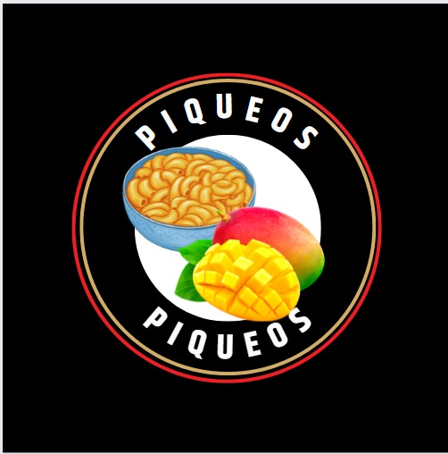

Preparación:
1.- Lo primero que haremos para preparar esta salsa cheddar será colocar en un tartera un poco de mantequilla y la ponerla a fuego medio. Mientras se derrite, añadimos el ajo en polvo, pimienta negra molida y una pizca de sal. Removemos hasta que se funda completamente.
2.- Cuando tengamos la mantequilla derretida añadimos la harina y removemos unos segundos para cocinarla y que pierda el sabor a crudo. Añadimos la leche poco a poco a la vez que vamos removiendo. Cuando tengamos la harina y la leche bien integradas añadimos el pimentón y removemos.
3.- Cuando el pimentón esté bien integrado en la salsa incorporamos el queso cheddar en trocitos o rallado y removemos hasta que se funda por completo.
4.- Añade abundante agua en una olla profunda, se recomienda que las cantidades sean 1 litro de agua por cada 100 g de pasta, ya que estas suelen aumentar su tamaño al momento de la cocción. Para evitar que la pasta se pegue entre sí, añade un chorrito de aceite Nicolini al agua. Puedes agregar una hoja de laurel para agregarle sabor, esto es opcional.
5.- Una vez que el agua esté hirviendo, añade una pizca de sal. No lo agregues antes, hará que el agua se demore más en hervir. Elige la pasta que deseas cocinar, las pastas largas que parecen no caber en la olla puedes partirlas en la mitad antes de añadirlas o sumergirlas una vez que estén mojadas.
6.- Una vez que la pasta esté hervida debere escurrirla con la ayuda de un escurridor o colador.
Precio: $1.00
Gasto: $15.00
Preparación:
1.-Pelar el mango
2.-Picar el mango en tiras mas gruesas que julianas. Como muestra la imagen
3.-Agregar el jugo de limon, la sal, la pimienta y el vinage. Procurando cubrir todos pedazos de mango
4.-Listo
Precio: $0.75
Gasto: $10.00